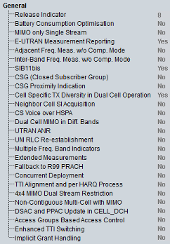

General UE Capabilities
This section provides general UE capabilities.

General UE capabilities
- "Release Indicator":
Access stratum release indicator, for example, R99, R5 - "Battery Consumption Optimization":
Indicates whether the UE benefits from NW-based battery consumption optimization - "MIMO only Single Stream":
Indicates whether the UE supports MIMO only single stream - "E-UTRAN Measurement Reporting":
Indicates whether the UE supports E-UTRAN measurement reporting - "Adjacent Frequency Measurements without Compressed Mode":
Indicates whether the UE supports adjacent frequency measurements without compressed mode - "Inter-Band Frequency Measurements without Compressed Mode":
Indicates whether the UE supports inter-band frequency measurements without compressed mode - "SIB11bis":
Indicates whether the UE supports system information block 11bis - "Closed Subscriber Group":
Indicates whether the UE supports closed subscriber group (CSG) - "Closed Subscriber Group Proximity Indication":
Indicates whether the UE supports CSG proximity indication - "Cell-Specific TX Diversity in Dual Cell Operation":
Indicates whether the UE supports cell-specific TX diversity in dual cell operation - "Neighbor Cell SI Acquisition":
Indicates whether the UE supports a neighbor cell system information acquisition - "CS Voice over HSPA":
Indicates whether the UE supports CS voice over HSPA - "Dual Cell MIMO in Diff. Bands":
Indicates whether the UE supports dual cell with MIMO operation in different bands - "UTRAN ANR":
Indicates whether the UE supports ANR - "UM RLC Reestablishment":
Indicates whether the UE supports UM RLC reestablishment via reconfiguration - "Multi-Freq. Band Indicators":
Indicates whether the UE supports multiple frequency band indicators - "Extended Measurements":
Indicates whether the UE supports extended measurements - "Fallback to R99 PRACH":
Indicates whether the UE supports fallback to R99 PRACH in CELL_FACH state and IDLE mode - "Concurrent Deployment":
Indicates whether the UE supports concurrent deployment of 2 ms and 10 ms TTI in a cell in CELL_FACH state and IDLE mode - "TTI Alignment and per HARQ Process":
Indicates whether the UE supports TTI alignment and per HARQ process activation and deactivation in CELL_FACH state and IDLE mode - "4x4 MIMO Dual Stream Restriction":
Indicates whether the UE supports MIMO mode with four transmit antennas only with restriction to dual stream operation. UE supporting this capability must belong to category 28, 30, 32, 34 or 36. When UE belongs to category 37 or 38, it must not signal the dual-stream restriction capability. - "Non-Contiguous Multi-Cell with MIMO":
Indicates whether the UE supports non-contiguous multi-cell operation on two, three or four cells with single gap in one band with MIMO - "DSAC and PPAC Update in CELL_DCH":
Indicates whether the UE supports DSAC and PPAC update in CELL_DCH - "Access Groups Based Access Control":
Indicates whether the UE supports network control of DTCH transmissions in CELL_FACH and DCCH/CCCH due to uplink DTCH data transmissions in CELL_PCH state and URA_PCH state - "Enhanced TTI Switching":
Indicates whether the UE supports enhanced TTI switching - "Implicit Grant Handling":
Indicates whether the UE supports implicit grant handling on the secondary uplink frequency